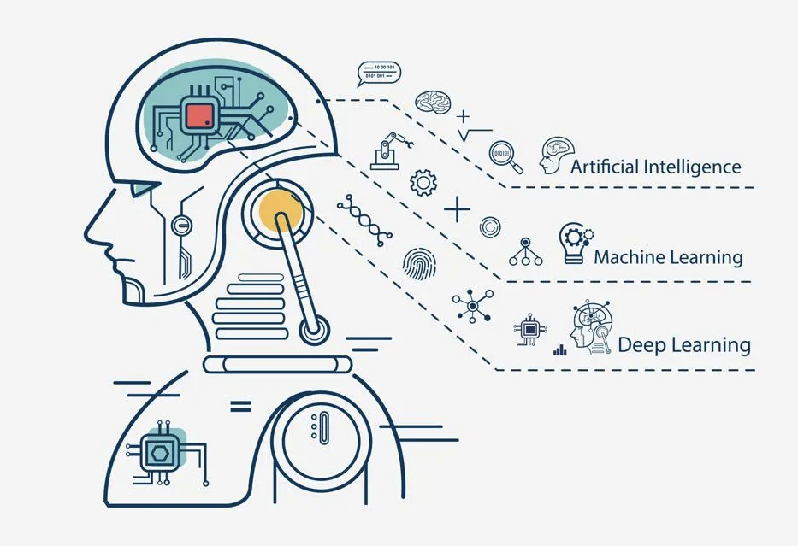

Uporaba umetne inteligence (UI) v šolah se v zadnjih letih hitro povečuje. Z napredkom tehnologije so se razvile številne rešitve, ki olajšujejo tako učenje kot poučevanje.
UI omogoča personalizirano učenje, avtomatizacijo ocenjevanja in prilagodljive učne metode, kar lahko izboljša učinkovitost izobraževalnega sistema.

Ena najpomembnejših prednosti umetne inteligence je sposobnost prilagoditve učnega procesa posameznemu učencu.
S pomočjo analize podatkov lahko UI prepozna prednosti in slabosti učenca ter predlaga vaje in vire, ki so prilagojeni njegovemu znanju.
To omogoča bolj učinkovito učenje in napredek vsakega posameznika.

UI omogoča avtomatizacijo številnih nalog, ki so sicer zamudne za učitelje, kot so ocenjevanje testov, nalog in kvizov. S tem učiteljem prihrani čas in omogoči, da se bolj osredotočijo na pedagoški proces. Poleg tega lahko sistemi UI nudijo takojšnje povratne informacije učencem, kar izboljša učni proces.
Vse več je aplikacij, ki delujejo kot virtualni učitelji ali asistenti. Ti sistemi lahko učencem pomagajo pri razumevanju snovi izven učilnice, saj so dostopni kadarkoli. Z uporabo naravnega jezika lahko odgovarjajo na vprašanja in ponujajo dodatne razlage, kar učencem omogoča lažje in hitrejše razumevanje snovi.